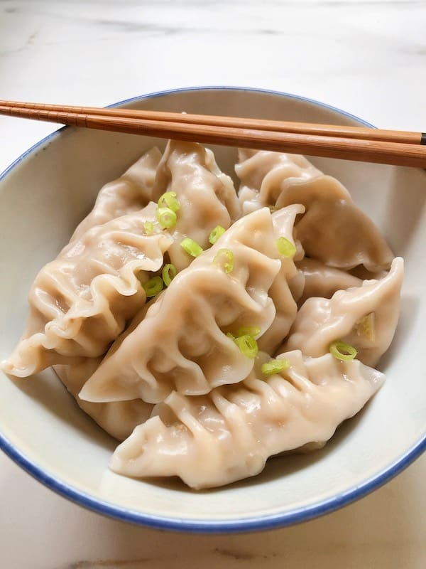

Seaweed Dumplings

This is one of the gems of traditional sindolan cuisine.
Seaweed dumplings are made from local nutrient-rich seaweed and
soft marshwheat.
Ingredients
- 2 handfuls of speckled seaweed
- 5 handfuls of whole marshwheat flour
- a cup of brackish water
- a pinch of rainbow pepper
Steps
- Mix the flour and wheat in a bowl
- Let it rest for half an hour, uncovered
- Mix the seaweed and the pepper Beware:certain rainbow pepper farms produce really spice pepper!
- Divide the dough into 6 pieces, then form them into balls
- Roll the doughballs into thin circles Do it quick, so they don't dry up!
- Add a spoonful of seaweed mix onto each circle
- Close the circles by adding a bit of water to their edges and sealing them shut, forming a half-moon shape
- Drop formed dumplings into boiling water and boil them for 5 minutes
- Enjoy!